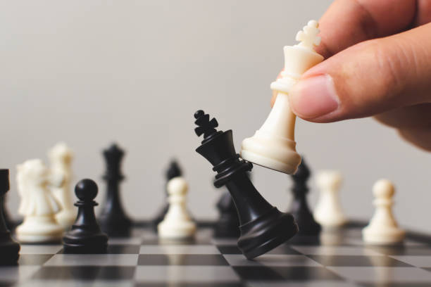
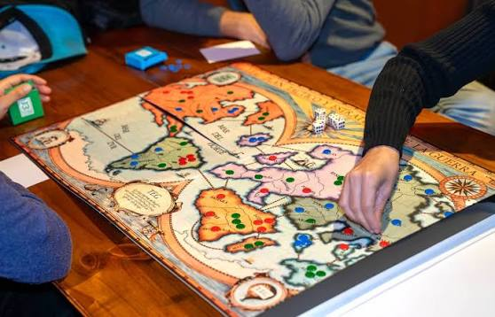
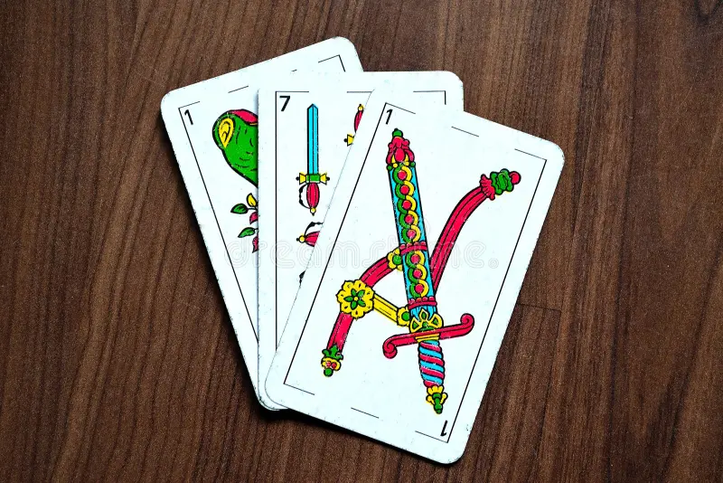
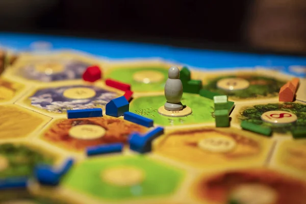

Ajedrez
El ajedrez es un juego de estrategia para dos jugadores. Cada participante debe planificar sus movimientos para intentar capturar al rey contrario.
ReglamentoConocé distintos juegos de estrategia, cartas y familiares
En este sitio vas a encontrar reseñas de diferentes juegos de mesa.
Los juegos están organizados en tres categorías: estrategia, cartas y familiares.
Utilizá el menú para seleccionar una categoría y conocer los juegos disponibles.

El ajedrez es un juego de estrategia para dos jugadores. Cada participante debe planificar sus movimientos para intentar capturar al rey contrario.
Reglamento
TEG es un juego de estrategia basado en la conquista de territorios. Los jugadores deben utilizar sus ejércitos y planificar sus movimientos para cumplir sus objetivos.
Reglamento
El truco es un tradicional juego de cartas muy popular en Argentina. Se caracteriza por la estrategia, el engaño y las apuestas entre los jugadores.
Reglamento
UNO es un juego de cartas en el que los jugadores deben intentar quedarse sin cartas. Las cartas especiales pueden cambiar el desarrollo de la partida.
Reglamento
Catan es un juego en el que los participantes deben conseguir recursos, construir asentamientos y expandirse por la isla.
Reglamento
Monopoly es un juego basado en la compra, venta e intercambio de propiedades. El objetivo es conseguir la mayor cantidad de dinero y llevar a los demás jugadores a la bancarrota.
ReglamentoEste sitio es mantenido por un grupo de personas interesadas en los juegos de mesa.
El objetivo es recopilar información y reseñas sencillas para que los visitantes puedan conocer diferentes juegos antes de comenzar una partida.
Si tenés alguna consulta o querés sugerir un juego, completá el siguiente formulario.